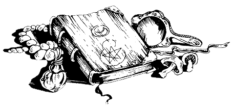

Vous prenez l'éprouvette et, après en avoir ôté le bouchon, vous l'approchez de votre nez. Le liquide n'a pas d'odeur. Vous en avalez alors une petite gorgée, et vous en attendez les effets. Mais rien ne se produit ; vous ne ressentez absolument rien. 